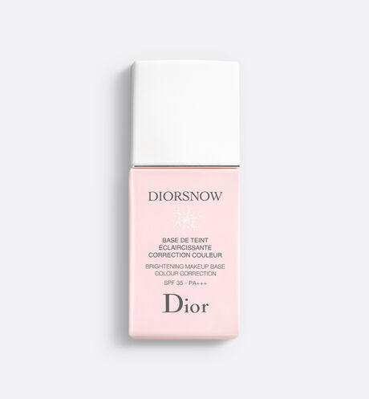

DIORSNOW
Brightening makeup base color correction spf35 - pa+++
DESCRIPTION
The essential base for a radiant makeup, the Diorsnow
Colour Correcting Makeup Base instantly targets and
corrects skin imperfections for a perfectly unified finish
and a fresh complexion. The ultra-fluid, weightless
formula blends lightly and imperceptibly into the skin
for perfect makeup hold and long-lasting foundation
wear.
The pink shade revives dull areas of the face and
illuminates lacklustre skin with a natural rosy glow. The
complexion is purer, fresher and vitally radiant.
Beige shade helps to neutralise and diminish redness
of the skin. The complexion is perfectly even and translucent.
The blue shade visibly conceals sallowness to reveal a
perfect bright clarity, transparency and immaculate luminosity